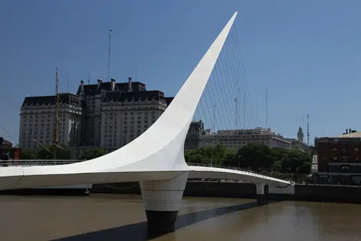

Santiago Calatrava buildings 22
Sort
 Bac de Roda Bridge1987 · Barcelona
Bac de Roda Bridge1987 · Barcelona Allen Lambert Galleria, Brookfield Place1992 · Toronto
Allen Lambert Galleria, Brookfield Place1992 · Toronto City of Arts and Sciences1998 · Valencia
City of Arts and Sciences1998 · Valencia Gare do Oriente1998 · Lisbon
Gare do Oriente1998 · Lisbon Bodegas Ysios2001 · Laguardia
Bodegas Ysios2001 · Laguardia
Puente de la Mujer2001 · Buenos Aires Palau de les Arts Reina Sofia2005 · Valencia
Palau de les Arts Reina Sofia2005 · Valencia Chords Bridge2008 · Jerusalem
Chords Bridge2008 · Jerusalem L'Àgora2009 · Valencia
L'Àgora2009 · Valencia Peace Bridge2012 · Calgary
Peace Bridge2012 · Calgary Museum of Tomorrow2015 · Rio de Janeiro
Museum of Tomorrow2015 · Rio de Janeiro Alamillo Bridge1992 · Seville
Alamillo Bridge1992 · Seville Montjuïc Communications Tower1992 · Barcelona
Montjuïc Communications Tower1992 · Barcelona Zubizuri1997 · Bilbao
Zubizuri1997 · Bilbao L'Hemisfèric1998 · Valencia
L'Hemisfèric1998 · Valencia Museu de les Ciències Príncipe Felipe2000 · Valencia
Museu de les Ciències Príncipe Felipe2000 · Valencia Milwaukee Art Museum, Quadracci Pavilion2001 · Milwaukee
Milwaukee Art Museum, Quadracci Pavilion2001 · Milwaukee Auditorio de Tenerife2003 · Santa Cruz de Tenerife
Auditorio de Tenerife2003 · Santa Cruz de Tenerife Turning Torso2005 · Malmö
Turning Torso2005 · Malmö Ponte della Costituzione2008 · Venice
Ponte della Costituzione2008 · Venice Liège-Guillemins Station2009 · Liège
Liège-Guillemins Station2009 · Liège Reggio Emilia AV Mediopadana station2013 · Reggio Emilia
Reggio Emilia AV Mediopadana station2013 · Reggio Emilia